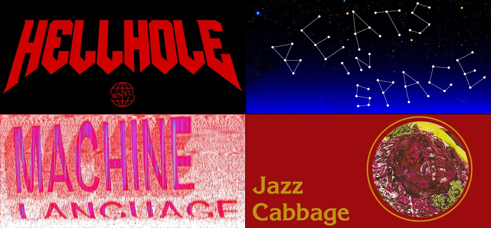

In 2017/2018 I was the Technology Director for WNYU. This included working with the design firm Awesome Opossum to redesign the stations website, along with working with shows within the station to create and identity and light branding for each individual show. The above image is 4 examples of that work.